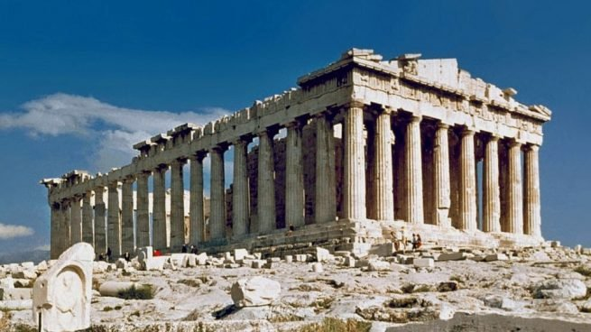

Grecia
La locución Antigua Grecia se refiere al período de la historia de Grecia que abarca desde la Edad oscura de Grecia, comenzando en el año 1200 a. C. y la invasión dórica, hasta el año 146 a. C. y la conquista romana de Grecia tras la batalla de Corinto. Se considera generalmente como la cultura seminal que sirvió de base a la civilización occidental. La cultura de Grecia tuvo una poderosa influencia sobre el Imperio romano, que la difundió a través de muchos de sus territorios en Europa. La civilización de los antiguos griegos ha sido enormemente influyente para la lengua, la política, los sistemas educativos, la filosofía, la ciencia y las artes, dando origen a la corriente renacentista de los siglos xv y xvi en Europa occidental, y resurgiendo también durante los movimientos neoclásicos de los siglos xviii y xix en Europa y América. La civilización griega era básicamente marítima, comercial y expansiva. Una realidad histórica en la que el componente geográfico jugó un papel crucial en la medida en que las características físicas del sur de la península de los Balcanes, de accidentado relieve, complicaban la actividad agrícola y las comunicaciones internas, mientras que su dilatada longitud costera favorecía su expansión hacia ultramar.
⠀
Un fenómeno sobre el que incidirían también de forma substancial la presión demográfica originada por las sucesivas oleadas de pueblos (entre ellos los aqueos, los jonios y los dorios) que invadieron y ocuparon la Hélade a lo largo del iii y ii milenio a. C. La herencia grecolatina en la sociedad occidental es más importante de lo que en principio pudiéramos pensar. Especialmente a la Antigua Grecia le debemos el descubrimiento de grandes hallazgos en disciplinas tan diversas como Geografía, Astronomía, Matemáticas o Ciencia. A partir del siglo VI antes de Cristo los griegos manifestaron un interés especial en explicar científicamente el mundo físico. Por ellos el pueblo heleno contribuyó con una ingente cantidad de conocimientos que han llegado hasta nuestros días. Incluso, a muchos sabios griegos se les dio y todavía mantienen los títulos de padres de la Ciencia, la Medicina o la Zoología.⠀
Estas son algunas de sus tecnologias innovadoras:⠀
Odómetro: El odómetro es un instrumento muy utilizado actualmente. Se utilizan para medir la distancia recorrida por vehículos como automóviles o bicicletas. Aunque ahora son digitales en su origen eran mecánicos. Se trata de un instrumento griego descrito por primera vez por Vitruvio en torno al año 27 antes de Cristo. Su inventor parece que fue Arquímedes de Siracusa en torno a la Primera Guerra Púnica, aunque otros historiadores atribuyen su autoría a Herón de Alejandría.⠀
⠀
Las bases de la geometria: Si hablamos de Geometría nos estamos refiriendo a una de las ramas más antiguas de las Matemáticas. Los egipcios, babilonios y la civilización del valle del Indo fueron los primeros en incorporar y utilizar técnicas geométricas pero nunca se interesaron en las reglas y axiomas que la rigen. Con los griegos se cambió la percepción de la Geometría. Ellos fueron los que recalcaron que los datos geométricos deberían ser establecidos a partir del razonamiento deductivo.⠀

⠀
Reloj con alarma: ambién los griegos fueron los inventores del reloj con alarma. Pero las primeras alarmas usadas por los griegos nada tenían que ver con las actuales. Ellos utilizaban un mecanismo integrado para señalar la alarma que sonaría como ciertos órganos de agua o como guijarros cayendo sobre tambores.⠀
⠀
El concepto de Democracia: La Democracia, en sentido estricto, es según la Wikipedia «una forma de organización del Estado en el cual las decisiones colectivas son adoptadas por el pueblo mediante mecanismos de participación directa o indirecta que confieren legitimidad a sus representantes». En el año 510 antes de Cristo la ciudad-estado de Atenas creó el primer gobierno democrático. Por eso Atenas es considerada la cuna de la Democracia.⠀
Descubrimientos de la ciencia moderna: os antiguos griegos contribuyeron con diversas aportaciones a distintas ramas de la ciencia. Podemos decir que rompieron estereotipos contemporáneos tanto en Astronomía, Biología o Física, y fueron grandes matemáticos. Su influencia fue tal que en los primeros conceptos de la ciencia la mayoría de los símbolos que se usaron en Física y ecuaciones matemáticas se derivan del alfabeto griego. Aristóteles, por ejemplo, aportó la idea de que la Tierra era esférica. También clasificó por primera vez a los animales y algunos lo llaman padre de la Zoología. Otro pionero, fue Teofrasto, que fue el primer botánico, mientras que los discípulos de Pitágoras hicieron los primeros avances en Filosofía y Geometría y propusieron la hipótesis heliocéntrica, referida a que la Tierra gira alrededor del Sol. Finalmente, Arquímedes descubrió y planteó el principio al que dio su nombre: «un cuerpo total o parcialmente sumergido en un fluido en reposo, recibe un empuje de abajo hacia arriba igual al peso del volumen del fluido que desaloja».